Prefer locations where the slopes are gentle (30 degree or less).
As a general rule, hill slopes that are made of soft soils and have slopes steeper than 30º are vulnerable to landslides. The problem is aggravated in soft saturated soils even with slopes less than 30º.
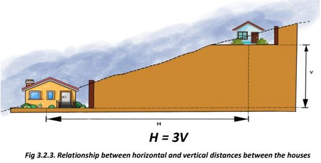If the house is on a steep slope, it should be small.
It is imperative that the houses at lower levels should be built first. The horizontal distance between the subsequent structures at different elevations should be at least 3 times the difference in their founding levels, if not more. (Figure 3.2.3)
3.2.1 Slope
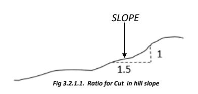Check that the slopes can be cut into steps of not more than 1 m height to at least 1.5 m width.
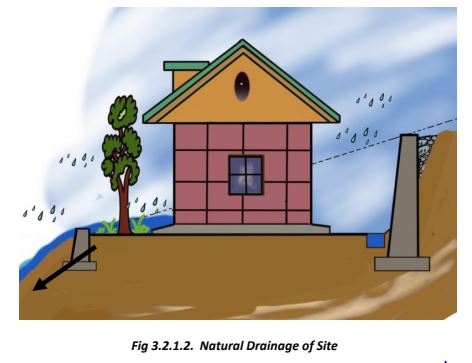Make sure that the site is such that the natural slope drains the water away from the site.
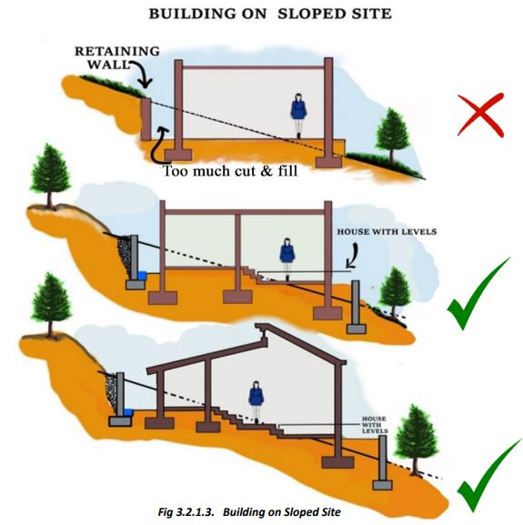It is important that the slope is cut and filled as minimally as possible. The natural slope of the site must be taken into consideration while the slope is cut and filled.
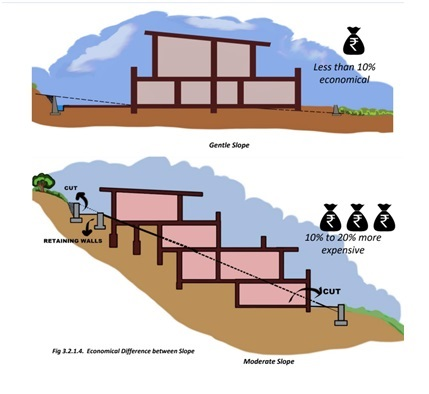Steeper slopes increase the risk of landslides, erosion, and slope failures. Building structures on such unstable ground can lead to structural damage or collapse.
Water runoff is more rapid on steep slopes, leading to erosion and potential flooding downstream. Proper drainage solutions are essential but can be difficult to implement effectively.
Following are the advantages of
gentle slopes:
• Easier Construction
• Better Accessibility
• More Usable Space
• Reduced Erosion Risk
• Better Drainage
• Safety
Each of the given five reasons contribute to the overall cost of your house.
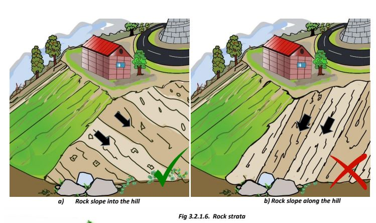Houses should be built preferably on those hill slopes where the geological layers of rocks slope into the body of a hill, and not along the hill slope.
A site should be such that a minimum clearance of 1.5 m between retaining wall and building wall can be provided. A suitable breast wall may be made on the cutting side, when soil or soil mixed boulder deposit rests over rock which are mostly met in practice. On valley side, the clearance should be such that base of foundation rests on firm soil or rock and not on filled up ground.
3.2.2 Drainage
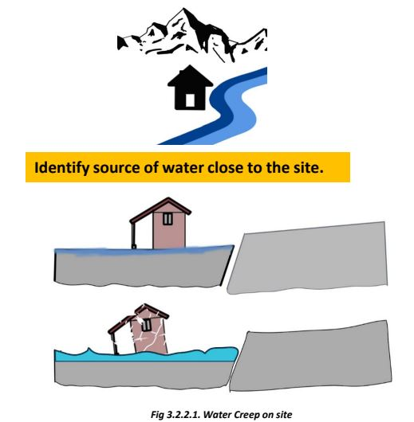It is important to look out for fissures in the ground, especially in summer months. At locations where there is perennial rainfall, the soft soil slopes may creep slowly.
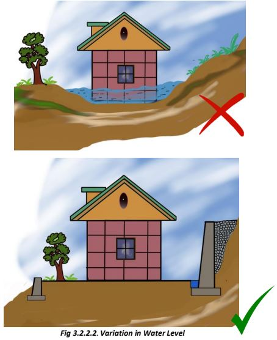Variation in rise of water level in last 30-40 years should be taken into account before planning. Plinth height above natural ground level should be more than the High Flood Level in the neighborhood of the site and the likely Road Level in the distinct future
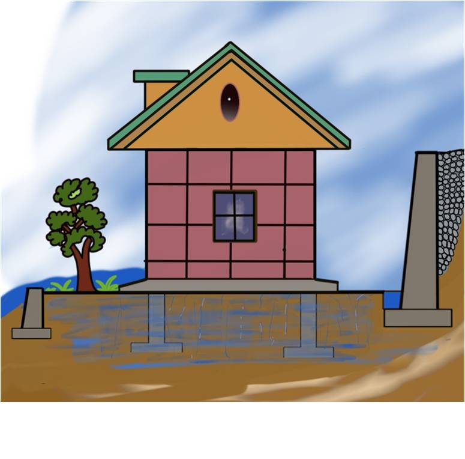On the uphill side of a building on a sloping site, drainage requires special consideration. The natural flow of water shall be diverted away from the foundations.
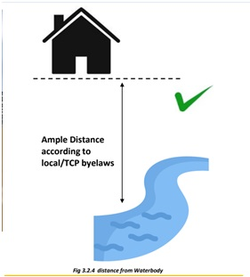The building site should be at a reasonably higher level above river and gullies such that the site is unaffected by landslide, discharge from dam/reservoirs and flooding.
3.2.3 Proximity to Water Body
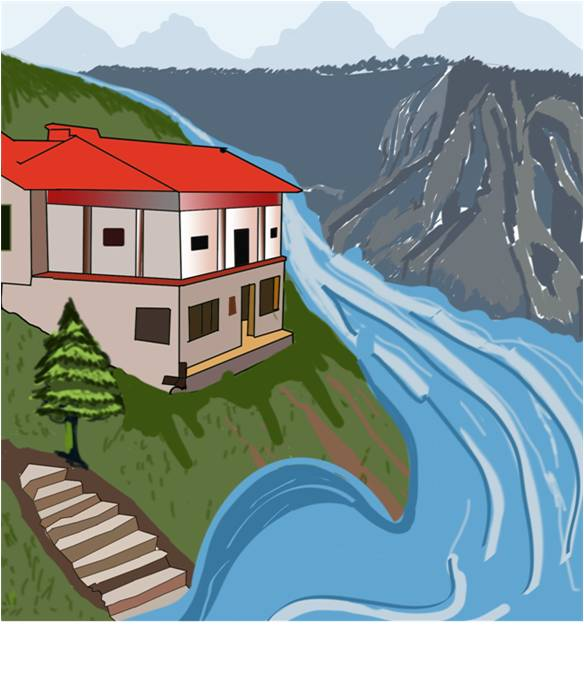Site should be such that the building pad is sufficiently away from the edge of the terrace. The foundation of an individual building should be located away from the edge of the terraces formed as natural floodplain deposits or constructed by cutting and filling along the hill side or at the river bank.
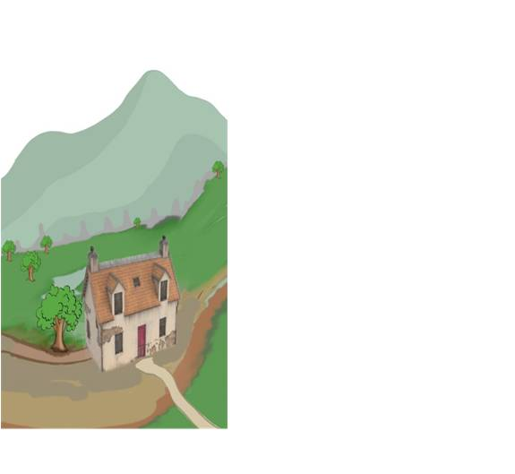Check that your site does not block any seasonal water channel. (Fig. 3.2.3.2)